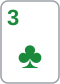

안녕하세요. 오늘은 계산보다 습관에 관한 이야기예요. 그래도 숫자로 확인해 볼게요.
리버에 상대가 크게 걸었는데, 질 것 같으면서도 "뭘 들었는지 한 번만 보자" 하고 콜하는 버릇이 있어요. 한 번은 작아 보여요. 그런데 이 콜이 습관이 되면 얼마가 되는지, B24·B25에서 배운 EV로 직접 재 볼게요.
이 글에서 배울 것
- 손해 콜 한 번의 EV를 구하고, 횟수를 곱해 "습관의 가격"을 보는 법
- 손해의 크기가 (승률 − 필요 에퀴티) × 콜한 뒤 팟으로 정해지고, 기준선에 모자라면 마이너스로 나온다는 것
- "한 번만 더"를 부르는 생각 중 무엇이 승률과 상관없고, 무엇이 이미 승률 안에 들어 있는지
1단계. 한 판 따라가 보기
Hero (BB 자리)


프리플랍: SB가 3BB로 레이즈 → Hero 콜. 팟 6BB.
플랍 · 팟 6BB



SB 2BB 벳 → Hero 콜. 팟 10BB.
Hero는 8 페어(보드 중간)에 A 키커(같은 페어끼리 승부를 가르는 나머지 카드)예요. K가 들어간 페어, 8보다 높은 포켓페어 같은 핸드에는 져요.
턴 · 팟 10BB


SB 체크 → Hero 체크.
리버 · 팟 10BB


SB가 10BB, 팟만큼 거는 팟벳을 했어요. 리버 J♠로 이제 J가 들어간 페어에도 져요.
Hero는 이렇게 생각해요. "아마 질 것 같은데… 여기까지 따라왔으니 뭘 들었는지 한 번만 보자."
상대가 들었을 핸드
보드 K♠ 8♦ 3♣ 2♥ J♠에서 Hero의 A8을 이기는 핸드는 이래요.
- K나 J가 들어간 페어(예: A♣K♦, Q♥J♦)
- 8보다 높은 포켓페어 99·TT·QQ·AA
- 셋: KK·JJ·88·33·22
- 투페어: KJ·K8·K3·K2·J8·J3·J2·83·82·32
스트레이트가 되려면 보드에 가까운 숫자 세 장이 있어야 하는데 이 보드엔 없고, 스페이드도 K♠·J♠ 두 장뿐이라 스트레이트·플러시는 안 나와요. 남은 A8과는 비기고, 나머지(Q8·T8처럼 키커가 약한 8 페어, 3·2 페어, 77~44 포켓페어, 페어 없는 핸드)에는 Hero가 이겨요.
블러프 후보도 있어요. 턴 2♥로 5-4는 A나 6, A-4·6-4는 5, A-5·6-5는 4를 기다리는 작은 스트레이트 드로우가 됐는데, 리버 J♠로 전부 빗나갔어요.
25%라는 가정
오늘은 "이 상대가 이렇게 팟벳할 때 Hero가 이길 확률은 25%", 4번 중 1번이라고 가정할게요.
이게 무슨 뜻이냐면, 상대가 이 리버에 4번 팟벳하면 3번은 위의 이기는 핸드, 1번은 빗나간 드로우 같은 블러프나 Hero보다 약한 핸드라는 거예요. 블러프 가능성은 이미 이 25% 안에 들어 있어요.
기준선부터
필요 에퀴티 = 10(Hero가 낼 돈) ÷ (10(원래 팟) + 10(상대 벳) + 10(Hero 콜)) = 10 ÷ 30 = 33.3%
3번 중 1번은 이겨야 본전인데, Hero는 4번 중 1번이에요. 기준선에 조금 모자라죠.
한 번의 EV
리버라 콜하면 바로 승부가 나니, EV로 콜 하나의 무게를 잴 수 있어요.
- 이기면: 원래 팟 10BB + 상대 벳 10BB = 20BB를 벌어요
- 지면: Hero 콜 10BB를 잃어요
콜 평균 손익 = 0.25 × 20 − 0.75 × 10 = 5 − 7.5 = −2.5BB
한 번에 2.5BB. 팟이 30BB까지 커지는 판에서 2.5BB면 별것 아닌 것 같죠. 이 "별것 아닌 것 같음"이 오늘 이야기의 핵심이에요.
2단계. 쌓이면 이렇게 돼요
20번이면
이런 장면이 한 달에 20번 온다고 해 볼게요. 매번 "한 번만" 콜하면, 평균으로 이만큼 줄어요.
20번 누적 = −2.5 × 20 = −50BB
실제로 정확히 50BB를 잃는다는 뜻은 아니에요. 운 좋은 달도, 나쁜 달도 있죠. 하지만 B24에서 본 것처럼 판이 쌓일수록 결과는 이 평균 쪽으로 다가가요.
작은 벳도 마찬가지예요
다른 장면 하나만 더 볼게요. 팟 20BB에 상대가 10BB, 팟의 절반을 거는 하프팟이에요. Hero 승률은 20%라고 할게요.
필요 에퀴티 = 10 ÷ (20 + 10 + 10) = 25% 콜 평균 손익 = 0.2 × 30 − 0.8 × 10 = 6 − 8 = −2BB 20번 누적 = −2 × 20 = −40BB
벳이 작아서 콜이 싸 보여도, 승률이 기준선에 모자라면 똑같이 쌓여요.
왜 그럴까: 손해의 크기는 "모자란 만큼 × 팟"이에요
식으로 이어 보기
B25에서 한 것처럼, 오늘 장면의 EV를 승률로 정리해 볼게요.
EV = 승률 × 20 − (1 − 승률) × 10 = 승률 × 30 − 10 = (승률 − 10 ÷ 30) × 30
10 ÷ 30이 필요 에퀴티, 30이 콜한 뒤 팟이죠. 그래서 EV = (승률 − 필요 에퀴티) × 콜한 뒤 팟이에요. 승률이 기준선에 모자라면 괄호 안이 마이너스라, 손해는 마이너스 숫자로 나와요.
(0.25 − (1/3)) × 30 = −2.5BB
하프팟 장면도 (0.2 − 0.25) × 40 = −2BB. 1·2단계에서 구한 값과 똑같죠.
그래서 "조금 모자란" 콜이 위험해요
괄호 안이 "얼마나 모자라나", 30이 "팟이 얼마나 큰가"예요. 크게 모자란 콜은 계산 없이도 손해가 보여요. 문제는 오늘처럼 조금 모자란 콜이에요.
한 번의 손해가 작아서 "이 정도면 괜찮겠지" 하게 되거든요. 그런데 횟수를 곱하면 작은 손해가 큰 손해가 돼요. 2.5BB × 20번이 50BB가 된 것처럼요. 한 번은 작아도, 습관이면 커요.
습관은 "같은 결정을 여러 번 하는 것"
B24에서 EV는 "같은 선택을 여러 번 했을 때의 평균"이라고 했죠. 습관이 바로 그 "여러 번"이에요.
그래서 리버 콜 하나를 고를 때 사실 우리는 "앞으로 이런 장면에서 매번 어떻게 할지"를 고르는 셈이에요. 한 번만 보면 −2.5BB지만, 습관으로 보면 그 숫자에 횟수가 붙어 있어요.
자주 하는 실수
실수 1. "여기까지 왔는데 아깝잖아" Hero는 프리플랍 3BB와 플랍 2BB, 합쳐 5BB를 이미 넣었어요. "지금 접으면 5BB를 그냥 날린다"는 생각이 콜을 부르죠. 그런데 이 판을 처음부터 세어 보면 무엇이 달라지는지 보여요.
- 폴드: 이 판 결과는 −5BB
- 콜: 이기면 팟 30BB를 통째로 받아요. Hero가 이 판에 낸 돈은 모두 5 + 10 = 15BB라, 이기면 +15BB, 지면 −15BB예요
- 콜의 평균: 0.25 × 15 − 0.75 × 15 = 3.75 − 11.25 = −7.5BB
콜이 폴드보다 −7.5 − (−5) = −2.5BB 나빠요. 1단계에서 "지금부터" 센 값과 똑같죠. 앞에서 낸 5BB는 폴드 쪽에도 콜 쪽에도 똑같이 들어 있어서, 둘을 비교하면 사라지는 거예요.
이게 무슨 뜻이냐면, 콜은 그 5BB를 되찾는 게 아니라 10BB를 더 거는 것이라는 거예요. 아까운 마음이 지키려는 5BB는 콜해도 돌아오지 않고, 평균 손해만 2.5BB 늘어요. 대신 리버에서는 "지금부터 낼 돈과 가져올 돈"만 봐요.
실수 2. "저번에 이거 콜해서 이겼었는데" 지난번 결과를 이번 승률처럼 쓰는 생각이에요. 4번 중 1번 이기는 콜이면, 지난번처럼 이기는 판이 당연히 섞여 있어요. 그 기억은 이번 판의 승률을 바꾸지 않아요. 대신 이번 판의 상대와 이번 벳으로 승률을 다시 어림해요.
실수 3. "혹시 블러프면 어떡해"를 한 번 더 얹기 블러프 가능성은 앞의 두 생각과 달리 승률을 정하는 재료예요. 오늘 25%에도 이미 "4번 중 1번은 빗나간 드로우 같은 블러프나 Hero보다 약한 핸드"라는 뜻이 들어 있어요. 그런데 25%를 정해 놓고도 "혹시 블러프면?" 하며 콜하면, 같은 블러프를 두 번 세는 거예요. 대신 블러프 가능성은 승률을 어림할 때 한 번만 넣어요.
"정보를 얻으려고 보는 콜은 가치가 없나요?"
좋은 질문이에요. "한 번만 보자"는 콜은 사실 상대 카드를 보는 데 돈을 내는 것이기도 하죠. 상대가 이런 팟벳에 무엇을 들고 나오는지 알면, 다음 판 어림에 도움이 될 수 있어요.
다만 오늘 장면이라면 볼 때마다 평균 2.5BB를 내는 셈이에요. 그리고 한 번 본 카드는 상대가 이 벳을 하는 여러 핸드 중 하나일 뿐이라, 그것만으로 "4번 중 몇 번이 블러프"를 다시 정하기는 어려워요.
그래서 정보값은 "공짜로 생기는 이득"이 아니라 2.5BB를 내고 사는 물건으로 봐요. 그만큼 다음 판에 돌아올지 따져 보면, 기준선에 크게 모자란 콜을 정보값으로 덮기는 어려울 수 있어요.
선생님의 한마디
리버에서 "한 번만 보자"는 생각이 들면 이렇게 해요.
- 칩을 내기 전에 "아까워서? 궁금해서? 지난번 생각나서?" 하고 이유를 한 번 소리 없이 말해 보기
- 이유가 계산이 아니면, 벳 크기로 기준선(팟벳이면 3번 중 1번)을 떠올리고 우리 승률 어림과 나란히 놓기
- 한 세션이 끝나면 "보려고 한 콜"이 몇 번이었는지 세어 보기
연습 문제
홀덤학습 에퀴티 계산기에서 내 카드를 고른 뒤 [콜 수익] 칸에 지금 팟(상대 벳 포함)과 콜 금액을 넣으면 필요 에퀴티가 나와요. 문제의 팟은 벳 전 팟이니, 지금 팟 칸에는 팟에 상대 벳을 더한 값을 넣어요.
문제 1. 다른 판이에요. Hero는 이 판에 이미 6BB를 넣었고, 리버 팟은 12BB예요. 상대가 6BB를 걸었고 Hero 승률은 20%예요. 옆에서 친구가 "6BB나 넣었는데 접으면 그냥 날리는 거잖아"라고 해요. 이 콜을 10번 하면 누적 손익은 평균 얼마일까요? 친구 말은 어디가 틀렸을까요?
정답 보기
필요 에퀴티 = 6 ÷ (12 + 6 + 6) = 25% → 20%로는 모자라요. 콜 평균 손익 = 0.2 × 18 − 0.8 × 6 = 3.6 − 4.8 = −1.2BB 10번 누적 = −1.2 × 10 = −12BB(평균).
친구가 말한 6BB는 콜하든 폴드하든 이미 팟에 있는 돈이라 결정을 바꾸지 않아요. 콜은 그 6BB를 되찾는 게 아니라 6BB를 더 거는 거예요.
문제 2. 오늘 장면(팟 10BB, Hero 승률 25%)으로 돌아가요. 상대가 팟벳 대신 얼마 이하로 걸었다면, Hero의 "한 번만 보자" 콜이 손해가 아니게 될까요?
정답 보기
기준선이 25% 이하가 되면 돼요. 하프팟 5BB면 필요 에퀴티 = 5 ÷ (10 + 5 + 5) = 25%로 승률과 같아요. 콜 평균 손익 = 0.25 × 15 − 0.75 × 5 = 3.75 − 3.75 = 0BB, 딱 본전이에요. 그보다 작게 걸면 기준선이 내려가서 같은 콜이 이득이 돼요. 이유가 "보고 싶어서"여도 숫자가 맞으면 콜이에요.
핵심 정리
- 손해 콜 한 번의 크기 = (승률 − 필요 에퀴티) × 콜한 뒤 팟. 모자라면 마이너스로 나오고, 조금 모자라면 한 번의 손해도 작아 보여요
- 습관의 가격 = 한 번의 EV × 횟수. 판이 쌓일수록 실제 결과도 그 평균 쪽으로 가요
- 앞에서 낸 칩은 콜·폴드 양쪽에 똑같이 들어 있어 차이를 만들지 않아요. 판을 처음부터 세든 지금부터 세든 차이는 같아요
- 지난번 결과는 이번 승률과 상관없고, 블러프 가능성은 승률 안에 한 번만 넣어요
정리하며
오늘은 리버 팟벳을 맞은 A8의 "한 번만 보자" 콜이 얼마짜리인지 재 봤어요.
승률 25%는 기준선 33.3%에 조금 모자라 한 번에 −2.5BB였고, 20번이면 평균 −50BB가 됐죠. 판을 처음부터 세어 봐도 차이는 똑같이 2.5BB라, 앞에서 낸 칩은 결정과 상관이 없었어요. 아까움과 지난번 기억은 이번 승률과 상관없고, 블러프 걱정은 이미 승률 안에 들어 있어 두 번 세면 안 된다는 것도 봤어요.
다음 글 B27에서는 계산을 내려놓고 테이블 매너를 다뤄요. 슬로우롤과 앵글슛처럼 같이 치는 사람을 불편하게 하는 행동과, 차례를 지키는 법을 봐요.
AI 작성 · 숫자는 계산 검증 · 승률은 예시로 정한 값 · 리버 콜 기준이라 콜 손익이 최종 결과